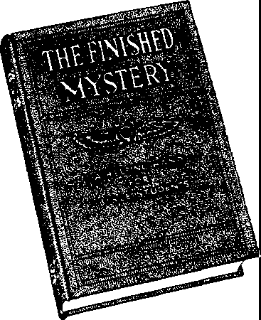

David Succeeds Saul as King..........
David’s Magnanimity .........................
David Brings the Ark to Jerusalem Profiting by Experience......................
The Kingly Kindness of David.........
No. 13
ROCK'OF AGES
Other foundation can
A
no man lay - • » PANSOM FOR ALl'7
Vol. XLI
Semi-Monthly
Anno Mundi 6048—July 1, 1920
CONTENTS
Gospel of the Kingdom.....
Why These Fiery Trials? Corroborative Proof .........
The Mantle .......................
The Work Before Us .......
Work for All .....................
Death of the Champion...
Psalms Not The Son of A Giant of Sign Speech
Merely History.
Man....................
Faith...................
to Abram...........
.195 .196 .197 .198 .199
.199
.200 .201 .201 .202 .203
.205 .205 .206 .207 .207
“I will stand upon my watch, and will set my foot-upon the Tower, and will watch to see what Ue wilt say unto me, and what answer 1 shall make to them that oppose me.”—Habakkuk 2 1.
©WTB5T.S.
. Up?n the el!rth dls<ieM of nations with perplexity: the sea and the waves (the restless, <1 Iseontented) roaring: men's hearts falling them for fear and tor looking-to the things coming upon the earth (society); for the powers of the heavens (ecclesiasticlsm) skull *>e shaken. . . . When ye see these things begin to come to pass*, then know that the Kingdom ot God is at hand. Look up. lift up your heads, rejoice, for your redemption draweth nigh.—Matthew 24:33; Mark 13:29; Luka31:3&^L
THIS JOURNAL AND ITS SACRED MISSION
THIS journal is one of the prime factors or instruments in the system of Bible instruction, or “Seminary Extension”, now bein« presented in all parts of the civilized world by the Watch Tower Bible & Tract Society, chartered A. D. 1884, “For the Promotion of Christian Knowledge”. It not only serves as a class room where Bible students may meet in the study of the divine Word but also as a channel of communication through which they may be reached with announcements of the Society’s conventions and of the coming of its traveling representatives, styled “Pilgrims”, and refreshed with reports of its conventions.
Our “Berean Lessons” are topical rehearsals or reviews of our Society’s published Studies most entertainingly arranged, and very helpful to all who would merit the only honorary degree which the Society accords, viz., Verbi Dei Minister (V. D. M.), which translated into English is Minister of God's Word. Our treatment of the International Sunday School Lessons is specially for the older Bible students and teachers. By some this feature is considered indispensable.
This journal stands firmly for the defense of the only true foundation of the Christian’s hope now being so generally repudiated —redemption through the precious blood of “the man Christ Jesus, who gave himself a ransom [a corresponding price, a substitute] for all”. (1 Peter 1:19: 1 Timothy 2 : 6) Building up on this sure foundation the gold, silver and precious stones (1 Corinthians 3: 1115; 2 Peter 1:5-11) of the Word of God, Its further mission is to “make all see what is the fellow-ship of the mystery which. . .has been hid in God, ... to the intent that now might be made known by the church the manifold wisdom of God”—“which in other ages was uot made known unto the sons of men as it is now revealed”.—Ephesians 3 : 5-9,10.
It stands free from all parties, sects and creeds of men. while it seeks inore and more to bring its every utterance into fullest subjection to the will of God in Christ, as expressed in the holy Scriptures. It is thus free to declare boldly whatsoever the Lord hath spoken—according to the divine wisdom granted unto us to understand his utterances. Its attitude is not dogmatic, but confident; for we know whereof we affirm, treading with implicit faith upon the sure promises of God. It is held as a trust, to be used only in his service; hence our decisions relative to what may and what may not appear in its columns must be according to our judgment of his good pleasure, the teaching of his Word, for the upbuilding of his people in grace and knowledge. And we not only invite but urge our readers to prove all its utterances by the infallible Word to which reference is constantly made to facilitate such testing.
TO US THE SCRIPTURES CLEARLY TEACH
That the church Is “the temple of the living God”, peculiarly “his workmanship” : that its construction has been in progress throughout the gospel age—ever since Christ became the world’s Redeemer and the Chief Corner Stone of his temple, through which, when finished, God’s blessing shall come “to all people”, and they find access to him.—1 Corinthians 3: 16, 17; Ephesians 2:20-22; Genesis 28:14; Galatians 3 : 29.
That meantime the chiseling, shaping, and polishing of consecrated believers In Christ’s atonement for sin, progresses; and when the last of these “living stones”, “elect and precious,” shall have been made ready, the great Master Workman will bring all together in the first resurrection : and the temple shall be filled with his glory, and be the meeting place between Gwl and men throughout the Millennium.—Revelation 15 : 5-8.
That the basis of hope, for the church and the world, lies in the fact that “Jesus Christ, by the grace of God, fasted death for e-rery man,” “a ransom for all,” and will be “the true light which lighteth every man that cometh into the wortd ', “in due tune”.—-Hebrews 2:9; John 1: 9 ; 1 Timothy 2:5, C.
That the hope of the church is that she may be like her Lord, “see him as he is.” I>e “partakers of the divine nature*,’ and share his glory as his joint-heir.—1 John 3:2; John 17:24; Romans 8:17; 2 Peter 1:4.
That the present mission of the church is the perfecting of the saints for the future work of service: to develop in herself every grace; to he God’s witness to the world; and to prepare to be kings and priests in the next age.—Epliewians 4; 12; Matthew 24: 14 ; Revelation 1:6; 20 : 6.
That the hone for the world lies in tl>e blessings of knowledge and opportunity to be brought to all by Chrisfs Millennial kingdom, the restitution of all that was lost in Adam, to all the willing and obedient, at the hands of their Redeemer and his glorified church, when all the wilfully wicked will be destroyed.—Acts 3:19-23; Isaiah 35.
Published oy
WATCH TOWER. BIBLE &-JRACT SOCIETY
124 COLUMBIA HEIGHTSo BROOKLYN, NY.,U S A
Foreign Offices : British: 34 Craven Terrace, Lancaster Gate, London W. 2 ; Australasian: 405 Collins St., Melbourne, Australia ; South African: 123 Plein St., Cape Town, South Africa.
Please Address the Society in Every Case.
ANNUAL SUBSCRIPTION PRICE $1.00 IN ADVANCE CANADIAN AND FOREIGN SUBSCRIPTION PRICE $1.50 SEND MONEY BY EXPRESS OR POSTAL ORDER, OR BY BANK DRAFT FROM FOREIGN COUNTRIES BY INTERNATIONAL POSTAL ORDERS ONLY (Foreign translations of this journal appear in several languages)
Editorial Committee: This journal is published under the supervision of un editorial committee, at least three of whom have read and approved as truth each and every article appearing in these columns. The names of the editorial committee are: J. F. Butherford, W. E. Van Amburgh, F. H. Robison, G. H. Fisher, W. E. Page.
Terms to the Cord’s Poor: AH Bible students who, by reason of old age or other Infirmity or adversity, are unable to pay for this journal, will be supplied free if they send a postal card each May stating their case and requesting Such provision. We are not only willing, but anxious, that all such be on our list continually and in touch with the Berean stu 'ies.
Nnfir* tn ftuhairihm • W« do not, aa a role, seed a eard of acknowlodgment for a renewal or nrooce KO ouwnwrj. for g pew aublcnptfoni Receipt and entry of renewal ere indicated rtthln a month by chance Io expiration dote, ae shown on wrapper lebel.
GWtered a* Second Claev Matter at Brooklyn. N. K. Faetojfce under the Act of March 3rd, 1879.
SUMMER CONVENTIONS
Our June 15th issue contained fuller announcements of July and August Bible Student Conventions to be held under the auspices of the International Bible Students Association; but for convenience we herewith mention some of the principal items of information again.
Los Angeles, Calif., July 3-5: Communications regarding local particulars—program, lodging rates, etc.—should be addressed to F. P. Sherman, 1051 South Grand Avenue, Los Angeles, Calif.
Tacoma, Wash., July 8-11: This location will admirihly serve friends in both the American and Canadian Pacific Northwests. Special railway rates are procurable on ♦he fare-and-a-third certificate plan, for particulars of which see June 15th issue of The Watch Tower, page 188. Address communications to C. F. W. Lundberg, 307 Provident Building, Tacoma, Wash.
Minneapolis, Minn., July 16-18: For local information apply to Otto Kjoerlein, 215 W. 35th St., Minneapolis, Minn. Special railway rates obtainable.
Columbus, Ohio, July 27-August 1: Sessions will bo held In Memorial Auditorium. Other information obtainable from F. D. White, 147 Winner Ave., Columbus, Ohio. Special railway rates.
Toronto, Ont., July 29-August 1: Fuller particulars from Watch Tower Bible and Tract Society, 270 Dundas St., W., Toronto, Ont.
Efforts are being made to arrange for an Atlantic States or Northeastern convention.
Revelation and Ezekiel Commentary
Exposes the duplicity of the clergy; explains the cause of the distress of nations; and foretells the blessing of the people in the near future.
For the publication and circulation of this book during the war many Christians suffered great persecution—being beaten, tarred and feathered, imprisoned, and killed.— Mark 13:9.
Ectry Christian and order-looing person sheuid read it
Revised, illustrated edition, cloth bound, $1.00 postpaid.
(Paper cover, magazine edition 20c)
‘\lnd this (/osptd of the kingdom shall he preached in all the meld for a a itness unto all nation*: and then shall the end eome."—Matthew d1,:!'/
THE Gentile time-; ended in 1914, and many expected that the church would be glorified by that time. We can now see that 1914 is a date clearlv marked in the Scriptures, although it did not mark the complete glorification of all the members of the body of Christ. The harvest period of forty years closed in 1918; but since then a gleaning work has been in progress, and there is yet more work for the church to do. Since these important dates have passed many have asked. Why are members of the body of Christ yet this side the vail ? The answer seems to be, That they might give a testimony to the world that the kingdom of heaven is at hand, and that they might have the necessary experiences to perfect them, making them meet for use in that kingdom. The body members on this side are the ambassadors of Christ; and if they are to deliver a message to the world, and should fail or refuse to deliver it, the very stones would cry out in their stead. It seems evident from an examination of the Scriptures that a great privilege is granted unto the church in delivering a message concerning the kingdom.
Five days before the crucifixion of the Master, while he sat on the side of the mount of Olives, his disciples approached him privately and inquired: “Tell us, . . . what shall be the sign [proof] of thy coming [presence |, and of the end of the world?’’ (Matthew 24: 3) Jesus answered the questions and his answer shows that it wa* not given so much for the benefit of those who inquired and who heard his answer then, a<. more particularly, for those this side the vail at the time of the fulfillment of his prophetic words. It is reasonable to conclude that St. Matthew did not record at that time all the conversation which took place, but that he did record the salient points, the most important parts. It is not at all unreasonable for us to draw the conclusion that Jesus said much more to them and probably asked, Why do you inquire of me concerning these things? It is reasonable to suppose that the spokesman of the disciples replied in substance: Master, you have told u> that you will establish your kingdom al some future time, at your second ■coming ; you have told us that our kingdom is not of thi> world and you have taught us to pray for the coming of your kingdom, that the will of God might be done on earth as it is done m beaten. We recall the promise •made to our father Abraham that all the families of the •earth should be blessed through his seed and we understand that blessing will come when your kingdom is •established; yea, the very essence of your teaching has been and is concerning your coming kingdom, and we are looking forward to it with joyful expectancy! We would understand that it would be good news to all who are in the right condition of heart and who are anxious for the establishment of your kingdom.
ANSWER NOT THEN UNDERSTOOD
The disciples were then consecrated, but they were not justified nor begotten by the holy spirit; and their minds, therefore, were not illuminated. Hence they could not clearly understand the full meaning of Jesus’ words given in answer to their question. As St. Paul puts it: “Now, an animal man does not receive the things of the spirit of God, for they are foolishness to him; and he is not able to understand, because they are spiritually examim'd”. (1 Corinthians 2: 14, Diaglott) They were animal men, not spiritual. That they did not understand is evidenced by the fact that after the death and resurrection of the Lord, when two of the disciples walked with him to Emmaus, they said to him: “We trusted that it had been he which should have redeemed Israel”. (Luke 24:21) Forty days later, when the same disciples were standing on the side of the Mount of Olives with the Master, just before his ascension into heaven, they asked him: “Wilt thou at this time restore again the kingdom to Israel?” (Acts 1:6) Under his direction they waited at Jerusalem, and at Pentecost they were begotten and anointed of the holy spirit and their minds w'ere illuminated and then they began to understand God’s great arrangement.
Thereafter they did not expect to see a fulfillment of the prophetic answer of the Lord Jesus in their day. We know from the words of St. Paul that he did not expect the Lord’s return for some time. He expressed it as his greatest desire that the Lord might return and that he might be with him, but this he expected at a future time. From these observations we must conclude that the saints this side the vail at the time of the appearance and during the second presence of the Lord must be the ones to whom his answer was really addressed and the ones able to understand it. We must keep in mind also that the words of the Master set forth in his answer are prophetic words, dealing with things future; and prophecy can be understood only after being fulfilled or while in course of fulfillment. According to that rule, then, we could not clearly understand the prophetic words of Jesus until the time for fulfillment.
HIS ANSWER EXAMINED
Our appreciation of the Master’s answer and the present duty and obligation of the church will more clearly 195
appear to us if we get the proper setting. When Zede-kiah, the last king of Israel, had reached the fulness of his iniquitous reign, Jehovah said concerning him: “Remove the diadem, and take off the crown: this shall not be the same: exalt him that is low, and abase him that is high. I will overturn, overturn, overturn, it: and it shall be no more, until he come whose right it is; and I will give it [to] him.” (Ezekiel 21:26,27) It is well known that at this time the first universal Gentile empire was established, with Nebuchadnezzar as the ruler; and the Gentile times beginning there covered a period of seven symbolic times, or 2,520 years. The date of the beginning being 606 B. C., it would follow that the Gentile times would end in 1914; i. e., the legal lease of power would at that time expire and then the time would be due for him “whose right it is” to receive and exercise kingly authority.
In the Revelation which Jesus gave to St. John we read: “We give thee thanks, 0 Lord God Almighty, which art, and wast, and art to come; because thou hast taken to thee thy great power, and hast reigned. And the nations were angry, and thy wrath is come.” (Revelation 11:17,18) The happening of the event here recorded in Revelation would mark definitely the end of the Gentile dominion. We find that the events which actually transpired agree exactly with the calculation as set forth in Biblical chronology, and prove definitely that the Gentile times legally and chronologically ended in the fall of the year 1914, at which time the nations did become angry and God’s wrath began to be visited upon them. Jesus answered that nation would rise against nation, and kingdom against kingdom; and this we find had the beginning of its fulfillment in the year 1914 in the great world war. Then would come, he said, “famines, and pestilences, and earthquakes [revolutions], in divers places”. (Matthew 24:7) That a famine has been in the earth since the war and that it is gradually increasing is admitted by all. That the pestilential prophecy has been fulfilled and is yet in course of fulfillment all agree. That revolutions have overthrown Russia and Germany, and are threatening in other parts of the world is likewise a fact. Jesus said: “All these are the beginning of sorrows”. One translator puts it: “These miseries are but the early pains of childbirth”. We would understand, therefore, that the world war and the other things incidental thereto marked the end of the Gentile times, the beginning of the passing away of the old order and the birth pangs incident to the incoming of the new.
It is interesting to mark the fulfillment of the prophetic utterances of the Master as recorded in verses 9 to 12. Satan, the god of the present evil order of things which is breaking in pieces, seeing his empire crumbling, directs his forces against the seed of promise. Evidence which has come to light since the world war ended shows that the persecution of Christians began in Germany, Austria-Hungary, Great Britain, Canada and the United States practically at the same time. In Austria-Hungary, then the stronghold of the Papal system, a number of Bible students were shot to death because of their faithfulness to the Lord. Others were imprisoned and kept in prison as much as three years. In Germany, Bible students, followers of the Master, who held conscientious scruples against taking human life, were hated and persecuted, some of them put in the front ranks of the army, and fell at the first charge. In Great Britain a number of Bible students were imprisoned. In Canada they were fined, imprisoned without the advantage of a trial and defense, and in many ways ill-treated. In the United States many were mobbed, tarred and feathered, kicked, abused, and thrown in jail without a charge being placed against them. Others were imprisoned and some beaten until they died from their injuries. The answer of Jesus in the light of these facts shows that the prophetic utterances of the Master in verse 9 has been fulfilled.
According to Dr. Weymouth’s rendering, that verse reads: “And at that time they will deliver you up to punishment and will put you to death, and you will be objects of hatred to all the nations because you are called by my name”. We should have in mind that the nations referred to mean Christendom, so-called.
It will be recalled that the fiery trials within the church have come since the great world war began. “And then shall many be offended, and shall betray one another, and shall hate one another.” (Verse 10) It hardly needs discussion to remind the Lord’s people that these words had a literal fulfillment in recent years, many having taken offense without just cause or excuse, and often indulging in expressions of hatred and ill will. To “betray one another” is not limited to the delivering of one by another to some tribunal, but it does mean any act of disloyalty, faithlessness, or dishonesty toward another; one who betrays a confidence or trust. Therefore any one who would willfully or deliberately seek to undermine or do injury to his brother by willful misrepresentation of his brother to his injury, or to the injury of his good name and reputation amongst his brethren, would be a traitor or a betrayer; and, of course, any one who would misrepresent his brother to an enemy or any one else would likewise come within the meaning of the Master's words as used in this text—all of which has had a fulfillment within the time mentioned.
During this period of time since 1914, true to the prophetic utterances of the Master, false prophets or teachers have arisen amongst the Lord’s people and have deceived many; and because of the iniquities (injustices) which have been indulged in, the love of many has waxed cold. All these things of necessity must transpire, because the Lord foretold they would.
WHY THESE FIERY TRIALS?
Many of the Lord’s dear children have asked, Why have so many fiery trials come upon the church ? Even these fiery trials have stumbled some. It is apparent from the Scriptures and from the facts that there are two potent reasons why the church has been subjected to fiery trials during the past few years: (1) In fulfillment of the prophetic utterances of the Master and that such experiences might so burn away the dross that the approved ones would be made manifest; and (2) that the saints withstanding the fiery trials might be prepared to give a testimony to Christendom in due time. The fiery trials and experiences are not merely for making manifest those who arc disapproved, but more particularly to manifest those who are approved. St. Paul indicates this when he says: “Yet once more I shake not the earth only, but also heaven. And this word. Yet once more, signifieth the removing of those things that are shaken, as of the things that are made, that those things which cannot be shaken may remain.” (Hebrews 12: 26. 27) “For there must of necessity be differences of opinion among you, in order that it may be plainly seen who are the men of sterling worth among you.’’ (1 Corinthians 11:19, Weymouth) That these severe experiences would come to the church at this time is evident from the Master’s words when he said: “But he that shall endure unto the end. the same shall be saved”.
CORROBORATIVE PROOF
Heretofore Tile Watch Tower has set forth the experiences of Elijah and Elisha as foreshadowing the experiences and work of the church. One of the main lessons evidently intended to be taught by the experiences of these two Godly men was that the church at one period of its experiences would need a greater degree of the Lord’s spirit than at another time, which would mean the absence of fear and the possession of perfect love, faith and confidence in the Lord. Briefly we review some of these experiences here to emphasize this point.
Elijah appeared before Ahab and told him that there would be no rain for three years. Thon he disappeared. At the end of that period, under the Lord's direction. Elijah refumed. At that time Obadiah, a servant of Ahab, together with the king and others, was searching for Elijah. Obadiah seemed to be a man who desired to sene God. and yet wo under the predominating inti lienee of Ahab ; therefore is a picture of the great company class. When Elijah met him and asked him to inform the king of his return. Obadiah declined for fear that Elijah would not appear and that the king would become angry with him (Obadiah) and put him to death. But being assured that he would appear. Obadiah obeyed. A meeting was arranged between the king and the prophet. The king accused the prophet of being the cause of the great scarcity of rain, in answer to which the prophet declared to the king that he was the one responsible because he had forgotten God, led the people into idolatry, associated with him an unrighteous woman as his queen, and installed the prophets of Baal instead of the prophets of God. Elijah then proposed a test as to who is God; and this test definitely proved to all present that Jehovah is God. When the prophets of Baal failed to meet the test, then, under Elijah’s direction, they were put to death. Elijah was bold and fearless then.
But shortly thereafter, Jezebel (modern ecclesiasti-eism), learning of what had taken place concerning the prophets of Baal, informed Elijah that she would kill him within twenty-four hours, and then he fled. Elijah was brave and fearless in the presence of the king and hundreds of prophets of Baal; but when a woman got after him he was frightened and hid away. Without going into the detail of all the fulfillment of this prophecy, we confine ourselves here to a few parts of it.
In the close of the year 1Q17 and the beginning of 1918 there was a wide distribution of “The Finished Mystery” and the “Fall of Babylon” tract. At the annual meeting of the Society in 1918, in view of the treatment received by a number of Bible students from those in authority and the denial of the right of many brethren to military exemption, it was deemed proper to pass a resolution and present the same to the “powers that be” ; consequently a resolution (See Z ’18 - 25) was passed and a committee appointed to present the same to the President of the LTnited States and the Secretary of War and the Provost-Marshal General. This resolution among other things said:
“We bold that the fi'ucliiugs of .Tomis and the Apostles forbid nil his I rue followers Io engage in mortal combat or war: that early in I he Christian era this teaching was departed from l>\ those claiming to be his followers ami that for many centuries past the clergy of both Catholic and Protestant church systems hate departed from the teachings of Jesus and the Apostles, substituting therefor man-made doctrines, and have taught the divine right of kings to rule and that the kingdoms of this world constitute the kingdom of the Lord, and have mixed the religion of Jesus Christ with the politics of the world, which lias resulted in confusion amongst Christian peoples, and which the Lord denounces as Babylon and as an abomination in his sight ; that the Lord through many of itis holy prophets foretold that such an alliance would result between civil and ecclesiastical powers on earth which would bring upon both the imlignat ion of God, causing wuts. revolutions and miarehj, which would be overruled by him for the purging of the nations of the earth to the end that he might establish among the people a pure and righteous government."
This marked the beginning ()f t|1(, fiery experiences of lite Lord's people in this land. Elijah and Elisha were then walking together. By this wo mean that the prophet Elijah and the prophet Elisha both represented I he same class of people but at different periods in the church's history, and pictured different works to be done by the same people. Then during the great whirlwind (the world war) fiery experiences arose in the chariot, the vehicle, the Society, and a separation of the work to be done by the Elijah and the Elisha classes was clearly marked, the Elijah part of it passing away. When we have in mind that Elijah and Elisha were both used as types, then we must understand that their experiences were foreordained of God and the experiences in the antitype are likewise ordained of the Lord.
As Elijah and Elisha walked together after the first smiting of the Jordan, Elijah said to Elisha: “Ask what I shall do for thee, before 1 be taken away from thee. And Elisha said, I pray thee, let a double portion of thy spirit be upon me.” (2 Kings 2:9) The word double here means not a duplication, but twice as much. The parable of the wise and foolish virgins shows that the wise virgins (little Hock) refused to give oil to the foolish virgins (great company), but directed them to go and purchase in the market of experience. Unlike, however, was the experience of Elijah and Elisha. Elijah replied to Elisha: “Thou hast asked a hard thing: nevertheless, if thou see me when I am taken from thee, it shall be so unto thee; but if not, it shall not be so.” By this we would understand that those discerning the experiences marking the end of the work pictured by Elijah and marking the beginning and progress of the work pictured by the prophet Elisha would be greatly strengthened in faith, therefore in love, and therefore would be devoid of the spirit of fear and enabled to perform confidently and fearlessly the remaining work of the church granted unto them by the Lord to be done. “Herein is our love made perfect, that we may have boldness [fearless frankness in the proclamation of the truth] in the day of judgment [which judgment is now upon the nations, as well as upon the church]: because as he is, so are we in this world [i. e., we are viewed from the standpoint of new creatures and not human beings]. There is no fear in love; but perfect love casteth out fear.”—1 John 4: 17,18.
The experiences of Elijah and Elisha when compared show that Elisha did have a double portion of the spirit. Elijah clearly pictured the experiences of the class that would become fearful and draw back for a time from the full performance of duty; while Elisha pictured a class who, with full confidence in the Lord, understand that their strength comes from the Lord and not from self, and who boldly and fearlessly go forth in the performance of duty. In other words, the same people at different times, moved by a different degree of the spirit of love and confidence are pictured by these two prophets.
When Elijah was threatened by Jezebel he fled and asked God that he might die, because he thought his work was completed. When Elisha was encompassed by a whole army at Dothan, who had come with the avowed purpose of taking him prisoner and putting him to death, he was calm and fearless. In the year 1918, when the persecution of the church began, there was a sudden cessation of the work. A spirit of fear laid hold on the church generally and many believed that the work was fully completed and asked that they might die. It was evident, however, that the Lord permitted these fiery experiences in order to prepare them for something to follow, and more particularly to prepare them for his kingdom. In view of the past trying experiences and the still disturbed condition of earth it must be clearly seen by all that it now requires a greater portion of the spirit to go forth with the message of truth and proclaim it than it did when everything was serene. And if we discern that God marked out these things in types for our benefit, if we discern the point or line of demarcation between the two works, then such of necessity must have a tendency to increase our confidence, our faith in and our love for the Lord and Master and our heavenly Father; and knowing that if God be for us there can be none against us, wc can with fearlessness go forward in his service.
THE MANTLE
Elijah and Elisha journeyed together from Gilgal to Bethel, to Jericho, and to the Jordan. Reaching the Jordan, Elijah took his mantle and wrapped it together and smote the waters, and they were divided hither and thither, so that they went over on dry ground. Undoubtedly Elijah possessed his mantle during his entire journey. His mantle therefore would very fitly, it seems, represent the truth or message to be delivered by the Elijah class. When he reached the Jordan, the account reads: “Elijah took his mantle, and wrapped it together, and smote the waters.” Wrapping together means to fold up and would therefore suggest a concentration of the message of truth on some specific thing. When “The Finished Mystery” was issued in 1917, together with extracts from it published in The Bible Students Monthly that year and the beginning of 1918, the message was concentrated particularly against Babylon, viz., the church systems as distinguished from the true church; and the true church was magnified in the explanation of it. There has probably been no one message delivered that has caused such a widespread discussion am on" the people as that which was delivered against Babylon. Necessarily, therefore, it caused some division among the people.
Shortly after they had crossed the Jordan, a fiery chariot separated Elijah and Elisha, and Elijah’s mantle fell from him. In the spring of 1918 the war, pictured by the whirlwind,' was its height. The fiery experiences of the church which came then as a result of an assault upon the Society and its work marked the separation of the Elijah and Elisha work, Elijah being taken away and Elisha left; i. e., the Elijah part of the work ceased here, to be followed by the Elisha work, which work must be done by the truly consecrated, the saintly class. “He [Elisha] took up also the mantle of Elijah that fell from him, and went back, and stood by the bank of Jordan.” His standing there would indicate a period of waiting; and following the spring of 1918 there was a period of waiting in which the church this side the vail was practically inactive so far as a public witness was concerned.
We also observe (1 Kings 19:16) that Elisha was anointed by Elijah in the place or stead of Elijah. Anointing means designation to office; therefore Elisha was designated to fill the same office filled by Elijah; hence of necessity both men must typify the same class, but doing separate works.
A WORK OF SLAUGHTER
The prophet Ezekiel describes a slaughtering work that must be done, saying: “Behold, six men came from the way of the higher gate, which lieth toward the north, and every man a slaughter weapon in his hand; and one man among them was clothed with linen, with a writer’s inkhorn by his side: and they went in, and stood beside the brasen altar.” (Ezekiel 9:2) The one man here described it is generally understood and agreed' represented the seventh messenger of the church. His work is described in verse 4, wherein he is directed to “go through the midst of the city, . . . and set a mark upon the foreheads of the men that sigh and that cry for all the abominations that be done in the midst thereof”. The great work of Brother Russell and that which he did was to impress indelibly upon the minds of those who desired to know the truth the philosophy of the ransom sacrifice, the mystery, the gathering out and completion of the church. In nominal Zion during the harvest period have been a great many honest Christian people who were sighing for relief from the bondage there. The Psalmist pictures them as wandering in the wilderness in a solitary way, hungering and thirsting for righteousness. In all of Brother Russell’s discourses he took occasion to call attention to consecration. He did not preach exclusively a restitution sermon. He declined to do such. That was not exclusively his work.
All of the men described in verse 2, coming from the way of the higher gate, which lieth toward the north, clearly indicates that they have a commission from the Lord to do a specific work. They all went in and stood beside the brasen altar, suggesting the thought that they were of the priestly order, performing a priest’s duties. Our thought is that the six here represented the compact or organized movement of the followers of the Master in performing the work that the Lord commissioned the church to do at the time under consideration. The Watch Tower Bible & Tract Society was organized by Brother Bussell under the direction of the Lord without doubt; and as has heretofore been suggested, it was his thought that it wotdd be his successor and do the work that he did not do. Our thought is, as heretofore expressed, that the six num therefore typified the Watch Tower Bible & Tract Society and all Christians working in harmony in the proclamation of the message and in the performance of the work that the Lord would have his people to do during a specified time. It will be obsened that the instruction to these, then, was to do a slaughtering work. “And to the others he said in mine hearing, Go ye after him through the city, and smite: let not your eye spare, neither have ye pity: slay utterly old and young, both maids, and little children, and women: but come not near any man upon whom is the mark; and begin at my sanctuary.” The smiting work here mentioned is clearly not to be done upon the consecrated who have been brought to a knowledge of the truth. This would seem to show' clearly that there is no divine commission for some to form separate organizations amongst the consecrated for the purpose of carrying on what they conceive to be the Lord’s work; but that the Lord would be pleased to operate and perform his work through the channel which he organized to do Ins work. The slaughtering here mentioned is not with carnal weapons. "For the weapons of our warfare are not carnal, but mighty through God to the pulling down of strongholds." (2 Corinthians 10:4) The weapons to be used consist of the sword of the spirit, the message of truth.— Ephesians 6: 17.
It will be observed also in examining the account of Elisha that ho was anointed to do a slaying work. (1 Kings 19:17) The prophet shows that during the Millennial reign the Messiah will call before him all the people and smite them with the rod of his mouth. Understanding these symbolic words, therefore, we see that the smiting or slaughtering does not mean to do injury to one physically, but it does mean that the truth should be used to smite the error and expose erroneous doctrines and systems, to make manifest to Christians their true condition and to cause their leaders to cease the pretense of being Christians, who are not Christians.
THE WORK BEFORE US
Various organizations now among nominal Christians are assuming to bring in the Lord's kingdom. They have taught error and kept the people in ignorance and blindness to God’s purpose. Evidently the time is at hand when the truth shall be used as a slaughter weapon to slaughter these false systems of doctrine and point out the true, consoling message to those who desire to hear the truth. The message, of course, will begin with professing Christians, designated as the sanctuary class, and with the ancient men, the clergy of the ecclesiastical systems; and the truth will expose all that misrepresents God’s plan and make manifest the message concerning his kingdom.
Again referring to Elisha: after Elijah was taken up we observe (2 Kings 2: 13, 14) that Elisha first took up the mantle that fell from Elijah and went back and stood at the Jordan. After standing there for some indefinite time, during which the mantle must have been in existence, “he took the mantle of Elijah that fell from him, and smote the waters”. Thus is shown a period of waiting between the time he took up the mantle and the time he did the smiting. The way now seems to be open to go forward in the Lord’s work, and the first thing to be done would seem to be the taking up of the message of truth, the wrapped-up part of that message, particularly “The Finished Mystery”, and use it. This “fell down” or was laid down in the spring of 1918. Under the Lord’s direction, the ZGs were printed and stored in various parts of the country, however, about that time; and now the Lord seems to be opening the way for the church to take up this slaughter weapon, this wrapped-up part of the message, and use it.— Ezekiel 21 : 14,15.
To this end June 21st has been set as the date for the beginning of this work and doubtless every one who loves the Lord and who is not fearful nor ashamed and who wanted to have a part in the Lord’s work, will have sought the opportunity to participate in this work while it lasts. The ZG is being sold for 20c per copy, which is so very cheap that it is within the reach of almost every one. The paper in it would cost that much now, to say nothing about the added cost; and past experience has shown that those who purchase are much more likely to read than one who receives it as a free gift.
There was prepared a revised edition of the Seventh Volume in cloth binding shortly after the ZGs were printed, and this will be for sale and distribution as soon as the ZG work is finished ; and then all copies of "'The Finished Mystery" will be ready for distribution. Let this work be done orderly and in the order named and we believe the Lord’s favor will be upon it.
WORK FOR ALL
Referring again to the answer Jesus made to the disciples’ question, we must keep in mind that his answer pertains specifieially to the question. The first part of the answer designates or fixes the beginning of sorrows or birthpangs and then shows how the trouble will progress. After the fiery experiences coming upon the church, and after admonishing his followers to endure cheerfully to the end. he then specifically states the general work that must be done throughout Christendom, saying: “And this gospel of the kingdom shall be preached in all the world for a witness unto all nations; and then shall the end come”. It will be noted he does not say the gospel that has been preached to the meek throughout the entire Gospel age shall be preached. What gospel then could he mean? The gospel means good news. The good news here is concerning the end of the old order of things and the establishment of Messiah’s kingdom. It means the dark night of sin and sorrow is passing away. It means that Satan’s empire is falling, never to rise again. It means the sun of righteousness is rising rapidly, its healing beams penetrating the darkness and driving back that which obscures the truth and bringing to the people that which will bless, comfort, strengthen and uplift them. It means the coming in of the Golden Age, the glorious time of which all the prophets wrote and of which the Psalmist sang songs of gladness and hope.
A modern translation of this text illuminates it: “And this good news of the kingdom shall be proclaimed throughout the whole world to set the evidence before the Gentiles, and then the end shall come”. Plainly this would seem to indicate that now the church must engage in the proclamation of this good news as a witness to the nations of earth, and then the old order will entirely pass away and the new will be here. Surely there could be no tidings so good, no news so comforting and helpful to the peoples of earth in this time of distress. Evidently this verse means that the witness must be given to the nations designated as Christendom. All of Christendom is now in distress and perplexity. They have experienced great trouble, but there is even greater trouble yet to come. Before that greater trouble comes, this message must go to the people as a testimony. It is evidently the same message and the same class of which the prophet Isaiah had a vision and about which he wrote: “How beautiful upon the mountains are the feet of him that bringeth good tidings, that publisheth peace; that bringeth good tidings of good, that publisheth salvation; that saith unto Zion, Thy God reigneth!”—Isaiah 52: 7.
Manifestly, then, it shows that the last members of the body of Christ, the feet members on earth, not the great company class, are the ones that now must stand before, or above, the kings of this earth and bring to them the good news, publishing peace and salvation, because the Lord is here. He has taken unto himself his great power and reigns I
It will be observed that in the order named this message must be delivered between the time of the great world war and the time of the “great tribulation” mentioned by the Master in Matthew 24: 21,22. This message could not have been delivered prior to the beginning of the world war. Clearly, then, the Master intended for us to understand that a time would come when the church must declare to the world as a witness that the old order is ending and will shortly pass away forever. And the fact that he said that for the elect’s sake the time of trouble would be shortened and much flesh saved warrants us beyond doubt in announcing now to the world the message, “Millions Now Living Will Never Die”.
Therefore it seems that now is the time for the church to proclaim far and wide in Christendom this good news. Hence it is the purpose of the Society to ask every public speaker, all the Pilgrim brethren, all the elders of classes, all who can give a public discourse in every part of Christendom, to prepare a discourse upon the subject: “The World Has Ended—Millions Now Living Will Never Die,” and to herald this message as a witness to Christendom; and it would seem if the church fails to do this, the very stones will cry out. There is now in course of preparation by the Society a booklet on this subject, which will be ready for distribution shortly. The Society will make Sunday appointments for Pilgrim brethren at places suitable for public meetings. Remember that a poor auditorium is a disadvantage to a meeting. We earnestly request the friends where such assignments are made to rent a well located and popular meeting place and thoroughly advertise a public meeting.
What a blessed privilege the church now has of being the ambassadors of the Lord’s kingdom and engaging in delivering this good news to all of Christendom; and while doing it, being confident that as soon as the. work is completed the Lord will take unto himself all those who shall constitute his body, and then their joy shall be full and pleasure shall be theirs for evermore!
“To the work! to the work ! there is labor for all;
Soon the kingdom of darkness and error shall fall, And the name of Jehovah exalted shall be
Tn the loud-swelling chorus, Salvation is free!"
“Out of the mouth of babes and sucklings hast thou established strength, . . . that thou "lightest still the enemy and the avenger.”—Psalm 8'2.
IN A recent Sunday School lesson we treated the historical events of David’s battle with Goliath. We now look with still deeper interest at the bearing which that incident has on the outworking of God’s plan.
The subjective emotions of David in connection with his fight with Goliath, the Philistine giant, are recorded for our benefit in the eighth Psalm. A part of what now stands as a superscription to the ninth Psalm, belongs in fact as a sub-scription to the eighth Psalm. It must be remembered that in olden times the Psalms were not divided into verses as they now are; nor was there any space between the Psalms themselves. It wotud be very easy, therefore, to confuse the sub-scription of a foregoing Psalm with the superscription of a following Psalm, unless we have some system by which to work. The Lord has not left us in the dark in this matter, for he has given us a complete detached Psalm; that is, one standing alone, which was evidently intended to serve as a model. Such a Psalm is the third chapter of Habak-kuk. Here we are enabled to see that the title acts as a superscription, followed by the Psalm proper; the designation of the Psalm, and often also an intimation of the ■event which gave rise to it, being attached as a subscription.
Therefore, understanding a part of what is now the superscription to Psalm 9 to belong properly to Psalm 8, we have the designation: For the Chief Musician, concerning “Muth-Labben”—the Death of the Champion.
PSALMS NOT MERE HISTORY
It would he a mistake, however, to suppose that the eighth Psalm was written, or that any of the Psalms were written, merely as another record of a historical event. That would not be true; for the historical events were well attested in the Books of Samuel, of Kings, and of Chronicles. The Psalms, in so far a< they touch upon historical incuts, iecord for our benefit the feelings of devotion, of exaltation, of faith, of contrition, etc., which those incidents called forth. Furthermore, all those Psalms which are marked with David’s name have a prophetic application to the greater than David. David’s Son and David’s Lord ; and many of those not so marked have a like application.
Goliath very well illustrates the great opponent and defier of God and of the Beloved One. He seems to be associated with and to represent the idea of imperfection. Six is a number which attaches to those things and agencies which fall short of divine approval, worthiness of which is indicated by the figure seven. Too much cannot be made of this, but it is a matter of great interest to note that Goliath had six pieces of armor mentioned, that he was six cubits and a span in height, and that “his spear’s head weighed six hundred shekels of iron”. Another ignoble personage of history who merited and received divine disapproval was Nebuchadnezzar. In defiance of God he erected an image “whose height was threescore [sixtyJ cubits and the breadth thereof six cubits'’-, while the summons to worship was issued by six instruments of music. The Man of Sin bears the same unenviable figure in multiples. 6(Hi; while the numbers connected with him are divisible by six — -42, 12(>0.
TURNING-POINT FOR DAVID
The death of this unapproved champion, who defied God and the hosts of his people Israel, proved to be the turning point in David’s life. David was a “stripling”, and is referred to in the Psalm as a “babe”. Doubtless he seemed so in comparison with the mighty and armored Philistine. In this song of praise it is but seemly that we find David filled with thoughts of the excellence of Jehovah’s name, his greatness, and his condescension in noticing him and in enduing him with strength.
The excellency of Jehovah Adonim, the Lord of all the earth, begins and ends the Psalm. Set between these declaration? there are four members which contrast God and Man alternately. This is the form in which the praise of Jehovah is formulated.
If we turn to 1 Samuel 17 we find that this thought of praise to Jehovah as the Lord of ail the earth prevails in every word that David uttered. He built up his confidence and that of King Saul by referring to the deliverance which Jehovah had given him from the lion and the bear, expressing faith that the same Jehovah would deliver him before the hand of Goliath. There was no selfish desire for glory in all this, but rather “that all the earth may know that there is a God in Israel”. Tlhis is the underlying thought in this eighth Psalm, whiich celebrates this great victory and which embodies some great thoughts of Jehovah.
AN ASSOCIATED PSALM
The same thought and almost the same words (are to be found in Psalm 144: 3:
“What is man that thou art mindful of him? Or the son of man that thou visitest him?”
And this hundred-forty-fourth Psalm is also “a Psalm of David”. It begins:
"Blessed lie Jehovah my strength.
Who tcacheth my bands to war, and my fingers to fight My goodness and my fortress: my high tower and my deliverer;
My shield, and lie m whom I trust ;
Who subdueth peoples under me.
Lord, what is man that thou takest knowledge of him? Or the son of man that thou makest account of him?’.
It is singular that in the Septuagint this Psalm bears the title, “A Psalm of David concerning Goliath”, It will be noted also that in Psalm 144 there is reference to the vain and false words of the strange children, the 1’liilistines. There are also the words commemorative of the deliverance of David: “Who delivereth David his servant, front the hurtful sword”.
Having established the circumstances which called this eighth Psalm forth we are better prepared t<o look for its application. The Lord through the Apostle has guided us in this matter and puts it beyond a doubt that the Psalm relates also to the true. David, David’s Son and David’s Lord, and to the subjection to him <of the world to come. The world is not to be put in subjection to angels, but to him who is emphatically “the Son of Man”. In Hebrews 2: .1-9 the vail is lifted a little and we are shown how “David, being a prophet”, spoke not of himself alone but rather of him who should come. Both the Psalm and the historical incident tell us that all things aie to be put under his feet, in subjection to him. “But now we see not yet all things put under him. But we see Jesus, who was made a little lower than the angels for the suffering of death, crowned with glory and honor, that he, by the grace of God, should taste death for every man.”
THE SON OF MAN
It is in Psalm 8 that Christ is first alluded to as “the Son of Man”, God’s human son. And this first occurrence of the title fixes for us its meaning. It refers to dominion in the earth. This is the underlying subject of the Psalm. It is addressed to “Jehovah our Adonim”; and the title Adonim always expresses lordship in relation to the earth, while the title Jehovah is used in connection with the thought of lordship in relation to covenants. The Psalm begins and ends with a reference to the earth: “0 Jehovah our Adonim, how excellent is thy name in all the earth”.
God made man in the first place “to have dominion” over God’s works in the earth. (Psalm 8:6; Genesis 1: 28) He fell through disobedience and lost that dominion along with his life and perfect environment. This ruin is to be repaired when “the Son of Man”, “the second Adam.” “the last Adam." is given this dominion over the earth for the purpose of making it new. As the Son of Man he is heir of the whole earth; as the Son of Abraham he is heir to the land, as the Son of David he is heir to the throne. The one who is David’s Lord (Adonai) is also “David’s Son” according to the flesh. He is “the Root” from which David is to spring or is to get his new life, and he is “the Offspring of David”. —Revelation 22:16.
DEFIER MARKED FOR DEATH
There is another Goliath who in God’s purpose is to be destroyed, another great champion who has long been defying God and terrorizing “Christendom”, the antitypical Israelites, even as the people of Israel “were dismayed and greatly afraid”. (1 Samuel 17:11, 24) “Give me a man, that we may fight together,” was the cry of Goliath. And in due course God gave him a man. It was not a giant in stature, but “a babe and a suckling”, strong in faith, to whom he ordained strength, that he might “still the enemy and the avenger”. So shall it be with that other great enemy of God and of Israel. The Son and Lord of David took part of flesh and blood, thus becoming “the Son of Man”, “that through death he might destroy him that hath the power of death, that is, the devil; and deliver them who through fear of death were all their lifetime subject to bondage”.—Hebrews 2:14, 15.
But we “see not yet” this happy event fulfilled. The Lord Jesus has come and has given himself as a ransom price for all, but certain phases of the redemptive work have yet to be completed. The price has been provided; but Messiah is only now putting forth his great power to take possession, and it is for this reason that “the nations are angry”. (Revelation 11:18) As David of old told prophetically just what would happen to Goliath, so our Lord Jesus has spoken in like strain of the final destruction of Satan. If he is staying the execution we may be sure that it is in perfect accord with the various features of God’s plan.
THE TRIUMPHANT ONE
Another work is yet to be done. He must finish calling out the church and finish dealing with those who are thus called out. They must have experiences like their Lord’s that they may be worthy of jointheirship with him in his kingdom. (2 Timothy 2:12) Then too, there must be the ridding of the earth of the iniquitous systems which Satan has used as his accoutrements.
Jesus took part of flesh and blood. He became a human being, having come to this earth over which he is to have dominion. He was made “a little lower than the angels” with a view to tasting death. And we read that “in the days of his flesh” he said with reference to this earth, over which he was to have dominion: “The foxes have holes, and the birds of the air have nests; but the Son of Man hath not where to lay his head,” that is, has not appropriated any estate or built any homestead for himself. This is the first occurrence of the title, the Son of Man, in the New Testament.—Matthew 8: 20.
While as the only keeper of the Law he had the right to all the earth, the time for exercising that dominion was “not yet”. That time is now, and the Apostle John was given a vision of it. He says: "I looked, and behold1 a wrhite cloud, and upon the cloud one sat like unto the Son of Man, having on his head [not now merely a place to lay his head] a golden crown, and in his hand a sharp, sickle. And another angel came out of the temple, crying with a loud voice to him that sat on the cloud, Thrust in thy sickle and reap; for the time is come for thee to reap; for the harvest of the earth is ripe. And he that sat on the cloud thrust in his sickle on the earth; and the earth was reaped.” (Revelation 14: 14-16) This is the last occurence of the title “Son of Man” in the New Testament.
A GIANT OF FAITH
In the elementary interpretation of Psalm 8 we recognize David, “the stripling,” endued with divine strength. We hear him ascribe praise to the Giver of all dominion. We see him acknowledge his own unworthiness, as though taken aback at the very audacity of his own faith. We listen to his prophetic words to Goliath: “This day will Jehovah deliver thee into mine hand; and I will smite thee, and take thine head from thee; and I will give the carcases of the host of the Philistines this day unto the fowls of the air, and to the wild beasts of the earth; that all the earth may know that there is a God in Israel. And all this assembly shall know that Jehovah saveth not with sword and spear; for the battle is Jehovah’s, and he will give you into our hands.”—1 Sam. 17 :46, 47.
That was a dramatic scene, but as nothing in comparison with the great battle between the beast and the Lamb. The battle is now joined, and Satan’s head is to be “bruised”. The direction of his empire shall be fatally interfered with. The challenge has been taken up. An angel has cried with a loud voice, “saying [in almost the very words of David] to all the fowls that fly in the midst of heaven, Come and gather yourselves together unto the supper of the great God; that ye may eat the flesh of kings, and the flesh of captains, and the flesh of mighty men, and the flesh of horses, and of them that sit on them, and the flesh of all men, both free and bond, both small and great. And I saw the beast [all those agencies which hold to and espouse the dominion-over-conscience idea] and the kings of the earth, and their armies, gathered together to make war against him that sat on the horse, and against his army. And the beast was taken, and with him the false prophet. . . . These both were cast alive into a lake of fire burning with brimstone. . . . And I saw an angel come down from heaven, having the key of the bottomless pit and a great chain in his hand. And he laid hold on the dragon, that old serpent, which is the devil, and Satan, and bound him [Greek, kept him bound] a thousand years, and cast him into the bottomless pit, and shut him up, and set a seal upon him.”—Revelation 19:17-20:3.
Here in this great symbolic scene on earth begins the full realization of the eighth Psalm. Then the Son of Man will exercise dominion in the earth and finally, at the end of that thousand years, will be seen the great final victory, “the death of the champion” (muth-lab-ben) as it applies not only to Satan’s activities but also to his person; for the time shall have come to “destroy him that hath the power of death, that is, the devil”.
[We publish the following communication, believing that there is much in it meriting consideration. We leave the time feature suggestions to the judgment of the reader. Ed. Com.]
Hear Brethren:
In the 15th chapter of Genesis is recorded how the word of the Lord came unto Abram in a vision, saying: “Fear not, Abram: I tun thy shield, and thy exceeding great reward”. Abram was concerned, and wondered how any reward could come to his seed when lie was childless. He inquired of the Lord about the matter, and was informed that his own heir should come forth out of himself. To reassure Abram, the Lord told him that as he was unable to number the stars of heaven, just so would his seed be for multitude.
Genesis 15:7-21 is evidently recorded as in the nature of a parenthesis; for the beginning of the 16th chapter, which immediately follows, is a continuation of Genesis 15: l-(>. It describes Abram’s efforts to comply with what he regarded as the Lord’s will—to bring the intended seed into the world. It is, therefore, a reasonable conclusion that the happenings narrated in Genesis 15:7-21 occurred at the same time as the events of Genesis 16:1-3, which is there stated to be “after Abram had dwelt ten years in the land of Canaan”. Abram entered Canaan 427 years after the flood, which occurred 1656 years after the creation of Adam. (See B, p. 42, 45 and 3rd paragraph on p. 51) From Adam’s creation to the beginning of the A. D. period was 4128 years; therefore, Abram entered Canaan in (4128-1656-427, which equals) 2045 B. C. Therefore, the events recorded in connection with Abram presenting to the Lord the three slaughtered animals and two birds very probably occurred ten years later, or in the year 2035 B. C.—Z. ’17, 317.
♦he exodus from Egypt occurred in the year 1615 B. C. (B, p. 42; Pyramid Passages, Vol. 2, p. 15) This was at the Passover season in the spring of the year, in the month of Nisan, called the month of Abib (“sprouting or budding”) in the books of Moses, and was exactly 430 years after the covenant which was made with Abram when lie entered the land of Canaan in 2045 B. C. (Exodus 12:40-43; 13:3, 4: Galatians 3:8, 15-17; Genesis 12:3, 4) Therefore, to be exact, the covenant was made with Abram in the spring of the year 2045 B. C., or 2044$ years B. C. ; and the covenant w as ratified ten years later at the slaughtering of the animals, which was in the spring of the year 2035 B. C., or 2O34J years B. C.
Now to examine the parenthetical account in Genesis 15: 7-21.
Verse 7. i am the lord that brought thee out of uk of Tin: CHAI.PEES, TO GIVE THEE THIS LAND TO INHERIT IT: The Lord reminds Abram that he had a purpose in bringing him from Ur, as much as to say: ‘Abram, the mere fact that I have been deeply enough concerned to bring you here to Canaan is sufficient evidence that I will accomplish what 1 have promised to you’.
8. and he [Abram] said, loud goi>, whereby shall i know that i shall inherit it [the land]? Abram wants some sign or evidence.
and Tin: lord said i nto him : The Lord decides to gne Abram another picture of his promised seed, for his future understanding. Later on he intimated to Abram (Genesis 17:8; Z. ’13-52, or (1, 310) that he would have a share in a spiritual reward. The Lord now makes a picture tor Abram, teaching this truth, and also showing what classes the seed would consist of. and how it would be revealed and when Abram would have an understanding of the answer the Lord made to his question.
take me an heifer: In the Tabernacle sacrifices a heifer represented the ancient worthies, including Abraham, Isaac, Jacob, etc. (T. 105) A heifer, being a female, indicated that the class pictured will not be of the priestly (male) class. ('I'. Ill, top of page) or three years old: Symbolically representing 3x360 days, or 1080 prophetic years.—Numbers 14:34; Ezekiel 4:6.
and a she goat: Representing the great company, when God will deal with them as a class, in the great time of trouble (T. 68) The she goat indicates that the class here represented will not be of the priestly (male) class. The two goats for a sin offering in the Tabernacle sacrifices were both males. (Leviticus 16:9, 10) Lots were cast as to which was to be the Lord’s goat, the little flock, and which the scapegoat, the great company; thus was pictured the fact that “God has no choice as to which of those who present themselves shall win the prize”. (T. 60) Thus it was typically indicated that both classes represented by these goats are “called in the one hope” of their calling, and that both are eligible to be of the priestly class, of three years old: Symbolically representing 3x 360 days, or 1080 prophetic years.
\ni> \ ram: Representing the 144,000 saints, the elect little Hoek class the spiritual seed of Abraham. (T. 73 i The ram being a male represents a class distinct from the classes pictured by female animals, ami a class to which only tn.des were eligible, the priestly class, of i’hiiee years old: Symbolically representing 3x360 days, or 1080 prophetic years.
and a irr.n.E no\ e, ami a vovmi pigeon: The heifer, she goat, and ram typify the three classes which have a share in the atonment work. (T. 108) The turtle dove and young pigeon picture the class (even the poor and oppressed of humanity) which will receive the benefits of the ransom through the work of atonement Two birds, or two turtle doves, or two young pigeons, were used as sin or burnt offerings of the people after the day of atonement. (Leviticus 12:8, 14:22; 15:14) Such sacrifices pointed back to or recognized the sacrifices of the atonement day—the gospel age. iT. 95, Leiiticus 14: 1-7, 21-23) The Psalmist refers to the turtle dote as a symbol of the congregation of the Lord’s poor, or oppressed (Psalm 74:19, Canticles 2:12) Henee the tin tie dote and young pigeon, presented in connection witli a heifer (which pointed forward to the red heifer of the sacrifice outside the Tabernacle) and a goat (which pointed forward to the scapegoat), and a ram (winch pointed forward to the ram which was used as a burnt offering). represented the natural or fleshly seed of Abraham, in the aspect of their poverty and humility.
The turtle do!e and young pigeon could each reasonably be considered to be one year old; for after the first year a bird mates and becomes a father-bird or a mother-bird, and is no longer considered to be young. The animals offered in connection with a turtle dove or a young pigeon, in the book of Leviticus, are yearlings, indicating that the birds were also required to be yearlings. In Numbers 12:6 a turtle dove or a young pigeon could be substituted for a lamb of one year. Symbolically, therefore, the turtle dove and young pigeon each represented one year or 360 days, or 360 prophetic years.
10. AND HE TOOK UNTO HIM ALL THESE [animals], AND divided them in the midst: Slaughtered or prepared for sacrifice, showing that the spiritual seed of Abraham, represented by these three animals, would do a sacrificing work in connection with their share in either making atonement for or cleansing the world. (G. 309) and laid i.tcii rn.< e one against anotiieh: Suggesting that the three classes represented would eventually be together, that is, rewarded on spirit planes, or that there is a unity of spirit and purpose, as well as of action, in the performance of the atonement work.
Bi r the birds divided he not: Doves or pigeons as sin or burnt offerings were never divided. (Leviticus 1:17; 5:S) They did not do a cleansing work for sin on account of others.
1 1. AND WHEN Illi: I OWLS < AMU DOW N UPON THE CARCASSES | Picturing Satan and his seed endeavoring to devour or destroy the spiritual seed of Abraham, and also the natural seed of Abraham later on in Jacob’s trouble, abbam drove them aw'ay : I’icturing God thwarting the purposes of Satan and his hosts.
AND WHEN THE SUN WAS GOING DOWN, A DEEP SLEEP FELL UPON ABBAM : Picturing Abram’s long sleep in death before the fulfillment of this type would come, before Abram would understand this answer to his question, and, lo, an hobbob of great darkness fell upon iiim: Picturing the darkness of the thousands of years of sin and death upon the human 203
race, during which Abram would be in the sleep of death.
13. AND HE SAID LNTO ABRAM, KNOW OF A SURETY THAT THY SEED SHALT, BE A STRANGEB IN A LAND THAT IS NOT THEIBS, AND SHALL SERVE THEM ; AND THEY SHALL AFFLICT them four hundred yeabs : Pointing out that the sojourning of the children of Israel would take them into the land of Egypt, and that It would last at least four hundred years. (Exodus 12: 40) This prophecy of the Lord proves that his thoughts in connection with this typical picture were on time features, and on a definite period of time.—Ex. 12:41.
14. AND ALSO THAT NATION, WHOM THEY SHALL SERVE, WILL I JUDGE: AND AFTEBWABD SHALL THEY COME OUT WITH great substance: The Lord would redeem the Israelites from the Egyptians with great judgments or plagues (Exodus 6:6), and the Egyptians would be so glad to see them go that they would lend unto the Israelites such things as they required. (Exodus 12:36) The Lord gave Abram this prophecy because its fulfillment would always thereafter be recognized as intimately identified with the birth of the Jewish nation, the natural seed of Abraham. (F, 457) This deliverance of Israel from the Egyptians also later became typical of the deliverance of the first-born, the new creation, the spiritual seed of Abraham. (F, 459) Likewise it later became a picture of the deliverance of Israel from Satan's captivity in death, and the deliverance of the whole world of mankind through Israel, constituting the natural seed of Abraham,—F, 458; G, 576, paragraphs 2 and 3.
15. AND THOU SHALT GO TO THY FATHERS IN PEACE; THOU Shalt be BUBiED in a good old age: This prophecy must have caused Abram to look to a future life for the fulfillment of the promise made to him. No doubt he took this matter by faith, knowing there was more meaning in his typical acts than he could fathom.
16. but in the fourth generation : The Hebrew word “el”, meaning in, also may be translated 6y. This change in translation has been made in the American and British Revisions in many instances in the Old Testament. The word generation is from the Hebrew word “dor”, which Strong defines as “a revolution of time”, or “an age” ; its root meaning is “to move in a circle”. It is rendered age in Job 8:8. The “revolutions of time” in God’s plan are 1000-year days. Hence this passage may also be interpreted, if not rendered: “But by the fourth revolution oj time," or. “At the end of four thousand years”, they shall come hitheb again : That is, Abram’s natural seed, the nation of Israel, here referred to in verses 13 and 14, will come hither again from another bondage; but this second time it will be from the bondage to Satan and death. At the end of the four thousand years, Israel, as a nation, will all be awakened from the dead. In other words, God meant that the type of Israel’s deliverance from Egypt, which God specifically mentioned ahead of time (verse 14), would have Its fulfillment in antitype at the end of four thousand years. The Margolis Version reads: “they shall come back hither”.
The period of four thousand years should begin to count from the time when Abram’s seed was promised to him, because, from God’s viewpoint, this was the beginning of the seed' of Abram which was typified by the slain animals. Circumcision of the heart was eventually to be a requirement of the Lord of all the seed of Abraham, both spiritual and natural. This was pictured by circumcision of the flesh, as a type, which was instituted as “a token of the covenant” ; and, at the same time, the seed of the covenant (Isaac) was foretold and given his name. It is twice stated that this was done when Abram was ninety-nine years old, as if to emphasize some time feature. (Genesis 17:1, 10, 11, 19, 24) When Isaac was named, a year before he was born, from God’s viewpoint the seed of Abram had its start. And not only did Isaac there become the first of Abram’s natural seed, but, being the seed of promise, he became a type of the spiritual seed.—Galatians 4:28.
As stated at the beginning, Abram entered Canaan in the spring of the year 2045 B. C., or 20441 years B. C. He was 75 years old when he left Haran and entered Canaan. (Genkis 12:4, 5) Therefore the time when he was 99 years old must have been 24 years later, or 20201 years B. C. And four thousand years from this date would be (4000 _ 2020}, which equals) 1979} years A. D., or the spring of 1980. Tills would be the time limit it would take Israel to “come back hither”, from their bondage in death. This will be just seventy years from the spring of 1910, when Pastor Russell began preaching restitution to the Jews at Jerusalem, and in special fulfillment of Isaiah 40:1, 2, spoke comfortably to Jerusalem and cried unto her that her “appointed time” was accomplished. (Margin) A partial account of the public meeting at Jerusalem at that time reads: “Other influential Jews were reported present and gave close attention. One of these, Doctor Levy, is the general manager and a very leading spirit among the Zionists of Palestine. He expressed a very keen Interest in what he heard, and said: ‘Alas, few of you Christian people hold such kind and liberal views toicard the Hebrews'. . . . He suggested that he would write to some of his Jewish friends in America and invite attention to the message that he had heard. He remarked to one of his friends, ‘Surely the speaker of the occasion is a prophet whom the Lord has raised up to set forth this message’.—Z. 10-182; compare G, 62, paragraph 1.
fob the iniquity of the amorites: Amorite means, literally, “a mountaineer”. The Amorites were enemies of Israel. Their land was to be possessed by Israel. (Deuteronomy 3:2) The “mount of the Amorites” was apparently another name for Canaan. (Deuteronomy 1: 7, 19, 20) The “mountaineers” who have been enemies of the spiritual Israelites, who are to be dispossessed of their kingdom, and who have usurped the name of Christ for their kingdom (Christ-endom), are the seed of Satan who have dwelt in the mountains (kingdoms) of earth. Read comment* on Ezekiel 16:1-5, 44, 45, in “The Finished Mystery”.
is not yet full : The intimation is that before Abraham's seed shall come back again (from death) the Iniquity of the antitypical Amorites (the “vine of the earth”, Satan’s seed I must come to the full. This, as we have seen, from prophecies made later.wns to be when the times of the Gentiles should be fulfilled, which was when God’s kingdom was due to be set up in power, when the "present evil world” came to an end, at the end of the Jewish civil year in the autumn of 1914.—See A, 66, chart; Z. 1915, pages 51-54, especially paragraphs 2 and 3, p. 54.
17. \xn it came to pass, that: That is, just as it was here foretold, eventually it would be so fulfilled, when the sun went down, and it was dabk: When the gospel light would become obscured in the dark night when no man could work. (John 9:4) behold a smoking fubnace: Behold! Something worth taking notice of. The great time of trouble. The same “smoking furnace” mentioned in Isaiah 31: 9. (See C, 146) and a bubning lamp: Marginal rendering, “a lamp of fire”. “Is not my word like as a fire?” (Jeremiah 23:29) (See Judges 7:16, 20; Job 41:19; Ezekiel 1:13) that passed between those pieces: The Hebrew word “abar” means “to pass between”, or “to make partition”, as it is translated in 1 King 6: 21. The judgments of the Word of God (a lamp of fire), accompanied with the great time of trouble (the smoking furnace), will serve to part or separate (that is, mentally reveal) the ancient worthies, the great company, and the little flock, as different classes, as pictured by “those pieces”. First, believers, and eventually the world, will come to recognize that there are different classes of Christians and different planes of reward In God’s plan. (See Z. 1918, p. 230, last paragraph; I Peter 1:13; 2 Thessalonians 1:7, 8; Romans 8:19) The great time of trouble will also bring about the Anal events which will install each of these classes in its proper place ready for the work of restoring Israel, and through Israel eventually the whole world of mankind.—Zechariah 14:16-19: see “the classes”, G, 575.
The sum of the ages of the three animals and the two birds is 11 years. If we take this literally, and add these 11 years to the time when the iniquity of the antitypical Amorites is full (autumn of 1914), it gives the autumn of the year 1925, which, according to the Jubilee types, is the real Jubilee or the antitypical beginning of the time for every man to return from the dead unto his possession and to retun unto his family. (Leviticus 25: 19; Z. 1911, p. 77) The fullness of the iniquity of the Amorites was to transpire prior to the natural seed coming hither again (verse 16) ; hence the logic in adding the ages of the animals to the time 11 io iniquity of the antitypical Amorites would be full, in order to get the time when the first resurrection to restitution conditions would occur. The ancient worthies being first to return, means that about the autumn of 1925 Abraham will know that the iniquity of the antitypical Amorites has come to the full, and he will come to an undei standing of what the Lord was picturing to him in answer to his question: “Whereby shall I know that I shall inherit it [the land]?"
it we take Ilie sum of the ages of the three animals and the two birds. 11 literal years, and reckon them as 11 x 360, or 3960 prophetic years, counting from 20343 years B. C., the time when God ratified the covenant with Abram, when these animals were slaughtered (Z. 1917, p. 316. 317) then we have the probable date when Abraham and the other ancient worthies will have actually come into the possession of the promised land, ami when Abraham will know that he has inherited the land, in answer to his question to the Lord. Titis will be 3960-20343. which equals 1925i years, or the spring of the year 1926.
Respectfully submitted to the Editorial Committee, ------- ------- Ohio
— — July 25 — 2 Samuel 2:1-7: 5: 1-5--
DAVID ATTAINING KINGSHIP — ANIITHEK MANIFESTATION OF HIS LOYALTY 'IO GOD—HIS SPIRIT OF SUBMISSION TO THE DIN INE WILL—HIS HNAL ACCEPTANCE UY ALL ISRAEL AS T1IEIB KING—A LIMITED MONARCHY ESTABLISHED.
"Tiust in Jehovah with all thy heart, and lean not upon thine own understanding."—Proverbs 3:5.
DAVID was in bis thirtieth year at the time of King Saul's death. During the ten preceding years he had lived a varied life. Banished from Saul’s court through envy, hunted by the king as if a wild beast, David’s experiences were far from what would be considered ideal. Chased as a brigand and looked upon with distrust by the majority of the people, who would know little about him except that while once high in the king’s favor he was now in disfavor, it would have been difficult for some to consider him otherwise than with mere envy. Others again, failing to reflect that God appointed the rulers of Israel, might think of David as a usurper, seeking to profit at his master’s expense. As a matter of fact we find that even in the demoralized state of affairs which followed the death of Saul and his three sons at Gilboa, still the eleven tribes promptly rallied to the support of Saul’s fourth son, Ishbosheth, and seemed never to think of David.
As the captain of his band of six hundred men, David had been making his home ,at Ziglag, southwest of Judah. When he heard of Saul’s deatli, he inquired of the Lord what he should do, instead of determining according to his own judgment. It seems remarkable that a young man, driven from home, hunted as a bandit and cut off from all the refining influences of life, should retain his reverence for the Lord to such a degree. Alas! How many Christians with every condition favorable, with Bibles in their hands and Bible study helps, manifest a much less loyal disposition ! How frequently the Lord and his will are forgotten, while self decides and directs! Indeed it may be considered an evidence of a quite thorough submission to the I,ord and development in grace to find a Christian earnestly seeking to know the Lord's will in all the important undertakings of his life.
Although the school in which David was trained may be considered a rude one, nevertheless he evidently learned many lessons in it. His first inquiry was: “Shall I go up into any of the cities of Judah?” The answer was favorable. His next question was: “To which city?” The Lord directed to Hebron, David wisely estimated that the people of his own tribe knew him well and understood why he was persecuted by King Saul. David was not without honor in his own country, and not without confidence in his own tribe. He recognized that the Lord was directing him, that the anointing oil had already been poured upon his head, and that it was only a question of time when the Lord, would point out the next step. He also recognized it to be his duty to wait on the Lord, and not to attempt to grasp hastily the things which were his by promise. He had waited for more than ten years. He could afford still to wait patiently on the Lord.
DAVID’S MAGNANIMITY
Some, miscalculating David’s temperament and sentiments towards Saul, supposed that they would gain his favor by claiming to have assisted in Saul's overthrow. But such' met with prompt rebuke, David in every instance speaking of King Saul in considerate language, not merely because it would be wrong to speak evil of any one, but also because Saul had been God’s representative, “the Lord’s anointed”, as David himself styled it. Quite to the contrary of any exultation over the death of his enemy, David sent a special message of appreciation to the men of Jabesh who had given decent burial to Saul and his sons. He wished them to know that he did not regard this as an act of enmity to himself, but rather as an act of decency and loyalty in which he would have been glad to share.
David's adverting to the fact that he was now king of Judah was an intimation to the men of Jabesh that they would perhaps like to have him king over them, as he was now king in the place of Saul, who had hunted him for ten years. It was an intimation that they might go farther and fare worse—all of which was true, as we know.
A PERIOD OF CIVIL WAR
Quite probably David expected that after his recognition by the tribe of Judah the other tribes would very speedily rally to his banner. Nevertheless we are not informed' respecting any move he made to accomplish this end. He was waiting on the Lord. Surely it was a long wait, too. Abner, as the general of King Ishbosheth of the eleven tribes of Israel, waged war against the enemies of Israel and to some extent gained victories. David had plenty of opportunity to wonder whether or not the Lord purposed to carry out the program instituted in his coronation. With the prestige of victories against outside enemies King Ishbosheth turned attention to the tribe of Judah, claiming tiiat it was in rebellion against the lawful king. The result was a civil war, which continued for two years. Gradually, however, it brought success to David and his army.
Ultimately King Ishbosheth and his general Abner were foully murdered; and we carefully note that David had no complicity in the matter, and that his oath of friendship with Jonathan was quite sufficient protection to Saul’s sons. However, the death of these men opened the way for the people of Israel to consider matters further: and as they considered they perceived that God’s favor was with David, that he was a man after God’s own heart, and that as a ruler he was doing valiant service to the people who had accepted him as their king. Saner thinking among the tribes brought them to the conclusion that David was the Lord's choice, and the whole people of Israel asked him to rule over them. No doubt God could have brought to pass such a condition of things before. There was no divine purposein the way. And so it is in all our affairs, if we only realized it. God, who knows the end from the beginning, is wisely guiding for the good of all his people, and particularly-of those who are individually his of the anointed class.
Our lesson tells that King David made a covenant or league with the people of Israel. By this is signified that he agreed to serve as king with a limited monarchy, under a constitution. He made a covenant, a constitution which was explicit as to what constituted the rights of the people and as to what were the rights of the king. This institution in Israel indicates that they were the most advanced people in the world; for, as far as we can learn from history, the kings of that time were despots, who governed according to their own ideas, trampling upon the rights and liberties of the people. The interesting ceremonies connected with the exaltation of David as king over all Israel, and the joy of the people because of their new king, are amply recorded in 1 Chronicles 12:23-40.
LESSONS IN WAITING
David's experiences in waiting for the kingdom and the lessons learned, the character developed and the preparation which made him wise and moderate—all serve to illustrate a great lesson to the gospel church. We also are called to sit upon the throne of the Lord, to rule in his name. We also have been anointed to the office by the holy spirit, which the Apostle declares is a foretaste of the glory and joy into which we shall enter when the crowning day shall have come. If discipline, self-control, faith, moderation and hope were all requisite to make David a king over the Lord’s people and to represent God properly in government, how much more severe lessons should be necessary for us, who are called to so much higher station—to the throne of earth as God’s representatives and to the royal priesthood, ruling, judging and trying mankind, to the intent that as many as possible of them may be rescued from their degraded condition and brought into full harmony with God I Surely we may say as did David that our trials and testings are much less than we had expected them to be. We, too, can afford to wait patiently on the Lord.
--August 1 — 2 Samuel 6:11 -19: Psalm 24: 7 -10--
THE ARK OF THE COVENANT -- ITS IMPORTANCE — ITS CAPTUBE BY THE PHILISTINES -- ITS BETURN AND ITS FINAL RESTORATION
— ITS BRINGING TO JERUSALEM THE MOST NOTABLE DAY IN KING DAVID’S LIFE EXPERIENCE.
"Enter into his gates with thanksgiving, and into his courts with praise."—Psalm 100:j.
AFTER David had been voluntarily chosen king of all the t rilies of Israel, not as a result of his conquest, but as k a result of his patient waiting for the Lord’s time to put him into the position of king, he took possession of Jerusalem and made it the capital city of his kingdom. Then followed wars with the Philistines, who again sought to invade the land of Israel. Under the Lord’s blessing the Israelites were successful in these wars. It was after seven years had passed under such conditions, after the kingdom of Israel had become quite settled, and was not likely to be molested by enemies, that the scene of today’s lesson opens. King David, now about forty-four years of age, recognized the fact that religious matters had been at a low ebb for many years among the Israelites, and that since the Lord had blessed them by reuniting them and giving them peace, an appropriate time had come for him to do what he could in the way of reviving the religious sentiments of the people. His own heart ever loyal to the Lord, he desired that others should more fully appreciate Jehovah as their light and their salvation. So it is with all who truly reverence the Lord and trust in him. They are desirous of telling their joys abroad and of helping others into the same condition of peace and rest in the Lord.
The Ark of the Covenant, it will be remembered, was the chief article of furniture in the Tabernacle service which the Lord instituted at the hand of Moses in the wilderness. We have no certain knowledge of the regularity of the Tabernacle worship during the period from Joshua’s day to the time of our lesson. Quite probably the services were maintained with more or less regularity. It is possible that since the Ark was the chief center of interest in connection with that service, its removal may have included that of the other articles of furniture of the Tabernacle—its boards, curtains, lamp, table, altars, etc.
Shortly after Israel had entered Palestine, Joshua located the Ark at Shiloh, twenty miles north of Jerusalem. (Joshua 18:1) That it was still there at the close of the period of the Judges is shown by I Samuel 1:3. The sons of Eli took the Ark with them into battle against the Philistines, thus evidencing their faith In the divine institutions, although their lives were corrupt; but as a result of this misuse of the Ark the Lord permitted it to be captured by the Philistines. However, while they possessed it, a curse seemed to accompany it. In the temple of their god Dagon his image fell down before the Ark; and the people of the cities in which it was located were afflicted with plagues. The Philistines were glad to get rid of the Ark; and loading it upon a cart they started the oxen in the direction of Israel. From the time of its return the Ark was in the custody of Abina-dab, the High Priest, and his sons, one of whom was Uzzah. The Ark had been thus with the house of Abinadab in the hill Glbeah and Kirjath-jearim, known also as Baale, for seventy years.
Any religious movement among the Jews must necessarily center in and about the Ark: for it was the symbol of the Lord’s presence and of his mercy and grace toward them as a people. King David realized that the Ark should be in the capital city of the nation, directing the minds of Israel not only to their earthly king and his laws and regulations, but through him to the heavenly King whom he represented. To have this event notable, to arouse the religious sentiments of the whole people, the king realized that to some extent all must participate in the movement; and hence he gathered from all quarters thirty thousand of the chief men of the nation. There is a good lesson here for spiritual Israelites. It is not sufficient that a leader, a representative, shall attempt some prominent service for the Lord and for the truth. It is wiser, better every way, that all the Lord’s people be invited to join directly or representatively in any prominent matter connected with the Lord’s service.
HOMING THE ARK IN JERUSALEM
. The occasion of bringing the Ark of God to Jerusalem was to be a gala day of rejoicing, long to be remembered. King David rejoiced at the unanimity of religious sentiment everywhere present among the people who accepted his instructions. Players of every kind of musical instruments had been engaged to accompany the procession. An ox-cart, specially prepared, was provided, and the Ark was put upon it; and the two sons of the High Priest accompanied it, one preceding and the other driving. The good Intentions of all concerned are not to be misjudged, but a serious error was made in that the divine order was not heeded. (Exodus 25: 14; Numbers 3:27-32; 4:15) It was not the business of the priests to transfer the Ark ; for the Levites had been commissioned by Moses to bear it by its staves on their shoulders. In neglecting these divine provisions an opening was made for all kinds of irregularity in connection with the services of the Tabernacle, and this the Lord designed should not be. The lesson which the Lord gave on this occasion not only was profitable to the king and the nation then, but has been profitable in a large degree to spiritual Israel during this gospel age.
When the time came for the manifestation of the divine disapproval of the neglect of the Mosaic law on the part of those who desired to honor God, the oxen stumbled; and to steady the Ark Uzzah. an underpriest, put forth his hand, when immediately God's displeasure was manifested in the man’s falling down dead. The gala day was suddenly spoiled. The joy of the king and of the people vanished. Instead came distress and fear. King David promptly concluded that lie dare not have the Ark with him and near his own house in Jerusalem, as previously intended. The procession stopped : and the Ark was deposited in the home of Obe-d-edom, where it remained for three months.
PROFITING BY EXPERIENCE
If we think of David’s course in refusing to bring the Ark to Jerusalem as a mark of petulance and anger against the Lord for spoiling the gala day, we shall make a great mistake. David’s character was too reverential for anything of this kind. He was the man who could fight against Goliath, but not the man who could fight against God. Every act of his life was marked by reverence, humility and a recognition of God's justice, power and love and of David’s own humility in the Lord's sight. Meantime the Lord was teaching a great lesson to the whole nation, which heard of the sad disappointment of the people on the great gala day when God’s displeasure was shown by his striking down even a priest for neglect of the divine supervision.
King David was watching, and noted that the house of Gbed-edom was blest by the presence of the Ark. Again his heart went out longingly with the wish that the chief emblem of divine worship should rest under the shadow of the Lord. Evidently he made investigation as to the handling of the Ark, and concluded that the mistake was that of himself and of the priest, and that a blessing would go with the Ark. So at the end of three months he made arrangements afresh for the bringing of the Ark to Jerusalem. Again the visitors came, the bands of music in order; and the procession accompanied the Ark again toward Jerusalem, the capital city. We read that David brought the Ark from the house of Obed-edom unto the City of David with gladness and joy.
--August S — 2 Samuel S: 15; 9:1-13--
DAVID’S CHARACTER MANIFESTED—“a MAN AFTER GOD’S OWN HEART”—HtS KINDNESS TO SAILS GRANDSON-—LESSONS FOR SPIRITUAL ISRAEL — JUSTICE AND GENEROSITY GODLIKE QUALITIES — “THY LOVING KINDNESS, OH, HOW GREAT?”
“David executed justice and righteousness unto all his people.”—2 Samuel 8:1.7.
THE Lord gives us a deep insight into David’s character, and shows us the abilities he possessed which constituted him “ a man after God’s own heart”. Entirely overlooking and forgetting the evils he had experienced from King Saul during the years when the latter sought his life, King David remembered with appreciation the conduct of Saul’s son Jonathan—how Jonathan had befriended him, and how he had made a covenant that in return he would show kindnesses to Jonathan’s family. (1 Samuel 20:1116) For a time, however, busy with the affairs of the kingdom, King David apparently forgot to make any special inquiry respecting the family of Saul; but something occurred which brought prominently to his mind his obligation to Jonathan. Presumably this was about the middle of his reign; and quite possibly it was his serious sin with Bathsheba and his hearty repentance therefor that now quickened his mind in respect to his responsibility to those about him, including the family of his deceased friend.
Ziba, chief servant of King Saul, was called to David, and inquiry was made respecting any of the remaining members of Saul’s family. This disclosed the fact that there was still living a son of Jonathan, who was a child of five years at the time of the death of Saul and Jonathan, and who was lamed in his feet by falling from his nurse’s arms as they fled at the news of the defeat.
King David explained to Ziba that he desired to do kindnesses to Saul’s posterity, and hade him bring to court Jonathan’s lame son. The king's command was obeyed, although it must have been received with great fear and trepidation and doubt with respect to its sincerity. It was the custom at the time that when one king succeeded to the dominion of another all the heirs of the throne should be sought and killed, lest they should give trouble later to the new dynasty. This was evidently expected of King David, and hence the secret in respect to the whereabouts of Jonathan’s son was so kept that the king knew not of him. However, Ziba was a man of large family interests, and realized that it was incumbent upon him to perform the king's bidding, even though it should mean the death of Saul’s heir. And the latten-, being lame and knowing that his present residence had been told the king, could do nothing less than respond and come to the court. His fear that the king’s words might be treacherous, his thought that so great a generosity as had been suggested could not be expected or trusted, doubtless caused him trepidation when on coming into the king's presence he prostrated himself at David’s feet, saying, “Behold thy servant I”
“Fear not,” said David, “for T will surely show thee kindnesses for Jonathan thy father's sake, and will restore thee all the lands of Saul, thy father; and thou shalt eat bread at my table continually."
With the people of oriental lands the eating of food together as friends implies a pledge of friendship and fidelity; and to eat continually at the table signifies membership in the family. We are not to consider this a light matter; for David had two wives at that timei, and their children were hopeful of being his successors to the kingdom ; and this bringing a stranger into the family might properly be considered as a menace to their interests, especially as that stranger, according to the usages of nations, already had a prior claim to the throne, superior even to that of the king.
The entire operation shows us the fearlessness of the king and his confidence that the kingdom would not be taken away from his posterity. It also shows us the confidence which all the members of his household must have had in respect to his judgment as to the affairs of the home and to his headship in his home. This headship we cannot suppose was used in an austere and arbitrary manner, but with loving kindness and generosity and in the interest of his entire household. He who could be thus kind to the son of a friend could certainly be kind and generous also to the members of his own family.
LESSONS FOR SPIRITUAL ISRAELITES
Exen the most advanced of the Lord’s consecrated people may draw some helpful suggestions from the incidents of this lesson :
(1) A friend in need is a friend indeed. Jonathan had been David’s friend in the latter’s time of need, and thus had attested his nobility of character, his faithfulness to principles of righteousness. his loyalty to the Lord.
(2) David’s searching for the opportunities to do good reminds us that such should be our attitude, that we should not merely wait until circumstances force upon our attention the troubles of others and their need of assistance. Well do the Scriptures say : “Blessed is he that consldereth the poor”. This is a Godlike quality, and whoever practices it is to that extent godly.
(3) David’s justice and generosity are both manifested in the course which he pursued. Instead of coveting Saul’s possessions and using his powers to attach these to his own, David deliberately settled the matter that the profits of Saul’s estate should all go to Jonathan’s son, who at the same time should continually be partaker of the king’s bounty at the royal table. Comparatively few would have been so just and so generous.
Lectures and iStudics by Traveling Brethren
BROTHER W. A. BAKER
Minneapolis, Minn.....July 15-18 Milwaukee, Wis.............July 25
Glenwood City, Wis.......July 19 Racine, Wis..................... ”
Withee, Wis................... ” 20 Zion City, Ill................... ”
Marshfield, Wis. ............ ” 21 Waukegan, Ill................. ”
Chili, Wis....................... ” 22 Hegewisch, III................. ”
Stephens Point, Wis..... ” 23 Roseland, Ill................... ”
BROTHER W. H. PICKERING
Alexandria, Pa...............July 16 Bellaire, Ohio .............July
Al'toona, Pa................... ” 17 Cambridge, Ohio ........”
Johnstown, Pa............... ” 18 White Cottage, Ohio .. . ”
Washington, Pa............... ” 19 Crooksville, Ohio .......... ”
Waynesburg, Fa............. ” 20 Zanesville, Ohio ............. ”
Wheeling, W. Va........... ” 21 Columbus, Ohio ....July 27-Aug. 1
BROTHER R. H. BARBER
Kewanee, Ill.................July 14 Danville, Ill...................July
La Salle, Ill..................... ” 15 Crawfordsville, Ind......... ”
Peoria, Ill. ........................ ” 16 Kokomo, Ind................... ”
Canton, Ill..................... ” 18 Anderson, Ind................. ”
Champaign, Ill............... ” 19 Muncie, Ind................... ”
Mattoon, Ill..................... ” 20 Columbus, Ohio ....July 27-Aug. 1
BROTHER V. C. RICE Wellston, Ohio ............July 13 Paintsville, Ky..............July
Chillicothe, Ohio ............ ” 14 Elmgrove, Ky................. ”
Portsmouth, Ohio .......... ” 15 Felicity, Ohio ................ ”
Ashland, Ky................ ** 1G Cincinnati, Ohio ............ y
Ironton, Ohio ................ ” 18 Midland, Ohio
Patrick, Ky................... ” 19 Columbus, Ohio ....July 27-Aug. 1
BROTHER T. E. BARKER
Gaines, Pa.....................July
14
16
18
19
20
21
BROTHER J. A. BOHNET
|
Minneapolis, Minn.....July 15-18 |
Boaz, Wis................ Monticello, Wis...... |
........July 25 ........ " 20 | |
|
Fairchild, Wis................. |
’ 10 | ||
|
Osseo, Wis....................... |
’ 20 |
Gratiot, Wis......... |
........ ” 28 |
|
Black River Falls, Wis... |
’ 21 |
Freeport. Ill........ |
........ ” 29 |
|
Tunnel City, Wis.......... |
’ 22 |
Rockford, Ill.......... |
........ ” 30 |
|
Madison, Wis................... |
’ 23 |
Belvidere, Ill.......... |
........ ’’ 31 |
BROTHER
Ellsworth, Wis.............July
Minneapolis, Minn.....July 15-18
Rochester, Minn............. ”
Eairbault, Minn............... ”
Austin, Minn................... ”
Bolivar, N. Y................only
Allentown, N. Y............. ”
Toronto, Ont.........July 28-Aug. 1
Superior, Wis................. ”
Duluth, Minn..................Aug. 1
|
BROTHER |
C. ROBERTS | |
|
Reid Hill, Alta. Calgary, Alta...... Baintree, Alta...... Itosedale, Alta. .... Humsey, Alta...... Lacombe, Alta...... |
.....July 12,13 ...... ” 14,15 .........July 16 .....July 17,18 ..........July 19 .......... ” 20 |
Red Deer, Alta............July 21 I’onoka, Alta................. ” 22 Leduc, Alta..................... ” 23 Calmar, Alta.............July 24, 25 Buford Alta ...... ” 27, 28 |
|
Edmonton, Alta. ..July 31 Aug. 2 | ||
|
BROTHER |
R. L. ROBIE | |
|
Lincoln, Ala....... Anniston, Ala...... Piedmont, Ala..... Gadsden, Ala...... |
..........July 14 .......... ” 15 ........... ” 10 ........... ” 17 |
Cullman, Ala................July 21 Albam, Ala.................. ;; 22 Tuscumbia. Ala....... 23. Nashville, Tenn............... ” 25 |
|
Boaz. Ala............ |
.......... ” 18 |
Louissille, Ky............... ” 2<> |
|
Walnut Grove, Ala |
......... ” 19 |
Columbus, Ohio ..July 27, Aug 1 |
BROTHER W. J. THORN
South Bend, Ind............. ”
Jackson, Mich................. ”
Plymouth, Mich.........July 20, 21.
Adrian, Mich ..............July
Toledo, Ohio ................ ”
Cleveland, Ohio .............. ”
Toronto, Ont......July Js-Aug. 1
BROTHER E. F. CRIST
Athol, Ida.......................July 16 Gibbonsville, Ida.......July 27, 28
Coeur d’Alene, Ida........... ’’ 18 Lewistown, Mont...........July 30
Wallace, Ida..................... ” 19 Great Falls, Mont.............Aug 1
Missoula, Mont........July 20, 21 Virgelle, Mont..............._...
Deer Lodge, Mont....... ” 22, 23 Shelby, Mont.................Aug.
Butte, Mont................. ” 24, 25 Bainville, Mont..............Aug.
BROTHER
El Paso, Tex..........July 15,16
Alburquerque, N. Mex. ” 17, IS
Durango, Colo............. ” 20, 26
Aztec, N, Mex. .......... ” 22, 23
Farmington. N. Mex... ” 24, 25
Pueblo, Colo...................July 28
D. TOOLE
Trinidad, Colo...........
Holly, Colo................
Lamar, Colo.............
Rocky Ford, Colo. ...
Florence. Colo ..........
Grand Junction, Colo
July 2S> . ” 30
. ” 31
Aug. *
BROTHER A.
Columbus, Ind.............July
Madison, Ind................... ”
Louisville, Ky................. ”
J. ESHLEMAN
Bedford, Ind.................July 21
Martinsville, Ind........... ” 22
Indianapolis, Ind............ ”
Columbus, Ohio ... July 27-Aug. 1
BROTHER W. A. THRUTCHLEY
Lockeporte, N S.......July 8 Hopewell, N. S....... July IC
Bridgewater, N. S........... ” 9 Stellarton, N S......July 17, 18
Halifax, N. S........July 10, 11 North Sydney, N. S. July 20
Fall River, N. S..........July 12 Sydnev. N. S ...........July 21,25-
Brookfield, N. S. ........ ” 13 Glace Bay, N. S........ ” 22,23
Truro, N. S..........July 14, 15 St Johns. Newfoundland Aug. 1
Brown, W. Va................July
Fairmont, W. Va. ...July 17, is
Clarksburg, W. Va..... ” 18, 19
BROTHER A. M. GRAHAM
Uhrichsville, Ohio ....... July
Akron. Ohio ................. ”
Ashtabula, Ohio ............ ”
Toronto, Ont.....July 28-Aug. 1
BROTHER J. B. WILLIAMS
Perdue, Sask. Altario, Alta. ... Hardisty, Alta. Sedgwick, Alta. Camrose, Alta. Viking, Alta. ..
...........July 6
........July 9-11
..........July 13
.....July 14, 35
... . ” 17, 18
......July 19
Phillips. Alta ..........July 2<>
Edmonton. Alta........Juh 21,25
Stonv Plain, Alta..... July 22
Busby. Alta. . ... -- - July 26. 28
Barrhead. Alta....... ” 29, 30
Edmonton, Alta. Juh :,1 Aug 2
M. L. HERR
Revere, Wash. .. . Colfax. Wash. .. Dayton, Wash. . Pomeroy, Wash. Latah. Wash .... Palouse, Wash.
July 2 1, 25 .. July 2(1 07 ...Julv 28, 29 ........ ” 30 -------- Aug. 1
Lexington, Kv. ..
Louisville. Ky Indianapolis, Ind. Muncie, Ind.
Peru. Ind. . ..
I.a Porte, Ind.
C. A. WISE
Michigan Ind
Chicago, 111 ...
Clinton, low a Cedar Rapids. f<»wa Des Moines, low a Minneapolis. Mmn.
BROTHER W. M. HERSEE
Toionto, Ont...........July 9
Brampton. Ont..........July 10. 1 1
Weston, Ont. _________ . .July 13
Orono, Ont................... ”
Potorboro, Ont. July 18, 19
Stirling, Ont.............. ” 24, 25
’fronton, Ont...........July 2s
Toronto, Ont. . .July 29-Aug. 1
Conventions to be Addressed
Tacoma. Wash. . July 8-11
Spokane, Wash. . . . July 12
by Brother J. F. Rutherford'
Fargo. N. L> ........ July 14
Minneapolis, Minn. . July 15-18
BROTHER G. S. KENDALL
Centralia, Wash...........July 15 Snohomish, Wash...........July
Aberdeen, Wash............. ” 1(1 Sultan, Wash................. ”
Tacoma, Wash................. ” 18 Everett, Wash................. ”
Bremerton, Wash........... ” 19 Stanwood, Wash............. ’’
Seattle, Wash................ ” 20 Sedro Woolley, Wash..... ”
Port Townsend, Wash. .. ” 21 Burlington, Wash......... ”
BROTHER 0. MAGNUSON
Rome, N. Y.....................July
Oneida, N. Y................... ”
Cortland. N. Y................. ”
Ithaca, N. Y................. ”
Auburn, N. Y................. ”
BETHEL HYMNS FOR SEPTEMBER
After the close of the hymn the Bethel family listens to the reading of “My Vow Unto the Lord”, then joins in prayer. At the breakfast table the Manna text is considered. (1) 140; (2) 95; (3) 114; (4) 233; (5) 193; (6) 120; (7) 112; (8) 326; (9) 249; (10) 267; (11) 279; (12) 266; (13) 23; (14) 205; (15) 322; (16) 106; (17) 136; (18) 124; (19) 74; (20) 244; (21) 226; (22) 235; (23) 44; (24) 8; (25) 333; (26) 332; (27) 277; (28) 119; (29) 229; (30) 165.